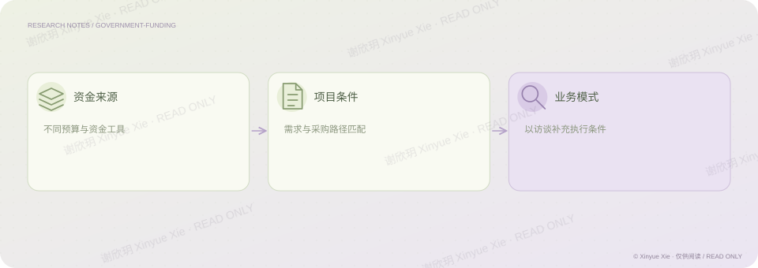

百度 · 专题研究
政府资金：从需求到项目落地
有项目需求，为什么仍然未必能成交？
PROJECT NOTES / THE BIG PICTURE
研究思路

01核心判断
在政府资金专题中，我梳理政府四本账及专项债等资金工具，关注资金规模扩大与项目要求趋严之间的关系，并结合友商访谈理解业务落地方式。这段研究帮助我把客户需求与资金条件放在一起看：政策方向能够解释为什么要做一个项目，预算和采购路径则影响项目能否真正推进。
02分析过程
区分预算与资金工具，避免把政策支持等同于可立即使用的资金。 梳理项目要求与采购路径，理解资金和方案能否匹配。 通过访谈补充业务模式的理解，将政策、资金和竞争条件连接起来。
相关经历百度 · AI 战略
理解商业
把项目需求与资金来源、使用条件和采购路径连接。
检验证据
结合资料梳理与访谈理解业务落地条件。
谢欣玥 Xinyue Xie · 研究作品仅供在线阅读
← 返回全部作品